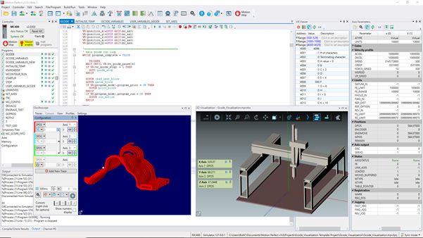

Motion Perfect 5
Motion Perfect 5 the machine automation development framework from TRIO. Including simulation, visualisation, development through to deployment for motion control, system IO configuration and DX4 servo drive configuration.
Motion Perfect 5 is a Microsoft Windows™ based application for the PC, designed to be used in conjunction with Trio Motion Technology's range of multi-tasking motion controllers, servo drives, HMI and IO expansion products.

Motion Perfect 5 provides the user with an easy to use Windows based interface for controller, servo drive and HMI configuration, rapid application development, and run-time diagnostics of processes running on the Motion Coordinator.